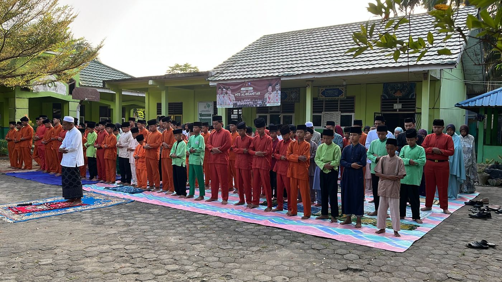
Salat Duha & Zuhur Berjamaah
Pembiasaan ibadah berjamaah bersama guru, di halaman dan musala madrasah.
Madrasah Tsanawiyah · Terakreditasi B
MTs Al-Ihsaniyah adalah madrasah tsanawiyah swasta di bawah naungan Yayasan Al-Ihsaniyah, Desa Sarang Burung, Muaro Jambi — mendidik dengan hati dan membentuk generasi islami sejak 1993.
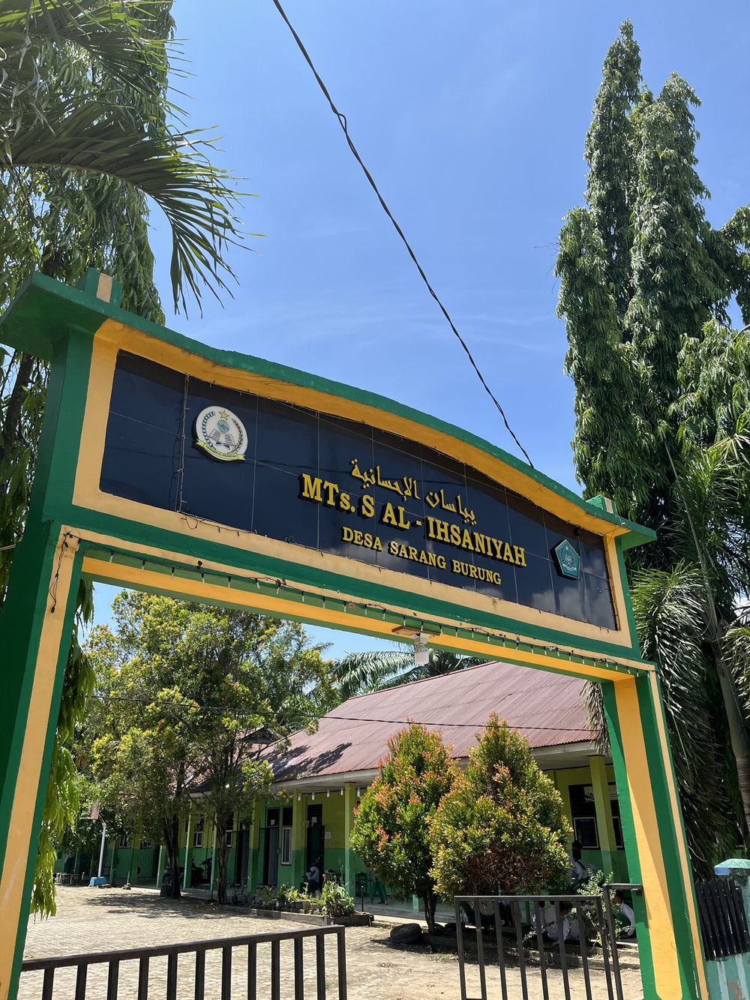
بِسْمِ اللَّهِ الرَّحْمَٰنِ الرَّحِيمِ
01 Sambutan
Assalamu'alaikum warahmatullahi wabarakatuh.
Alhamdulillah, MTs Al-Ihsaniyah Sarang Burung kini memiliki website resmi sebagai sarana informasi dan silaturahmi dengan orang tua, masyarakat, dan seluruh pemangku kepentingan.
Di bawah naungan Yayasan Al-Ihsaniyah, kami menyelenggarakan pendidikan yang memadukan ilmu pengetahuan, teknologi, dan akhlakul karimah melalui Kurikulum Merdeka dengan pendekatan Pembelajaran Mendalam serta nilai-nilai Kurikulum Berbasis Cinta — agar murid tumbuh cinta kepada Allah dan Rasul-Nya, cinta ilmu, cinta sesama, serta cinta lingkungan dan tanah air.
Di tengah Desa Sarang Burung yang kaya kearifan lokal, kami ingin melahirkan generasi yang berilmu, beriman, dan bermanfaat bagi masyarakat. Kritik dan saran yang membangun selalu kami harapkan.
Wassalamu'alaikum warahmatullahi wabarakatuh.
02 Profil Madrasah
MTs Al-Ihsaniyah berdiri pada 15 Februari 1993 karena banyak anak di Desa Sarang Burung ingin melanjutkan ke SMP/MTs, tetapi sekolah lanjutan berada jauh dari rumah mereka. Madrasah ini hadir agar mereka dapat menempuh pendidikan lebih tinggi tanpa harus pergi jauh.
Beriman Sempurna, Berpikir Cerdas dan Berakhlak Mulia.
| Nama | MTs Al-Ihsaniyah Sarang Burung |
|---|---|
| NSM | 121215050001 |
| Status | Swasta, Yayasan Al-Ihsaniyah |
| Berdiri | 15 Februari 1993 |
| Akreditasi | B |
| Badan hukum | SK Kemenkumham RI AHU-0034671.AH.01.04 Tahun 2016 |
| Kurikulum | Kurikulum Merdeka, Pembelajaran Mendalam, Kurikulum Berbasis Cinta |
| Luas bangunan | 4.000 m² |
| Alamat | Jl. Haji Abdul Ghafar, RT 09/RW 02, Desa Sarang Burung, Kec. Jambi Luar Kota, Kab. Muaro Jambi, Jambi 36361 |
03 Program Madrasah
Selain pembelajaran Kurikulum Merdeka, murid dibiasakan beribadah berjamaah dan aktif dalam kegiatan pembinaan karakter setiap pekan.

Pembiasaan ibadah berjamaah bersama guru, di halaman dan musala madrasah.
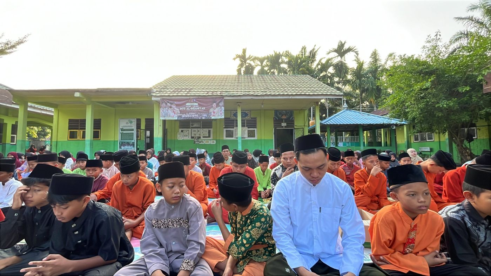
Setiap Jumat murid membaca Surah Yasin bersama dan mendengarkan nasihat keagamaan.
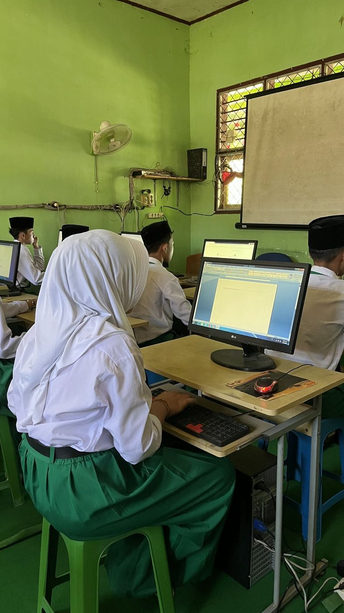
Praktik Informatika di laboratorium komputer: pengolah data, Scratch, hingga Python.
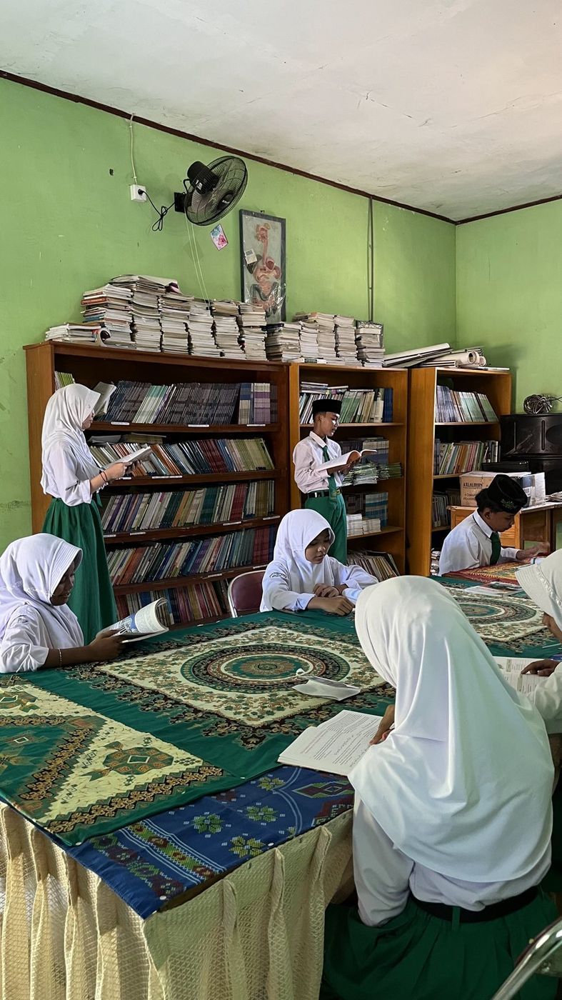
Perpustakaan madrasah menjadi ruang membaca dan belajar mandiri bagi murid.
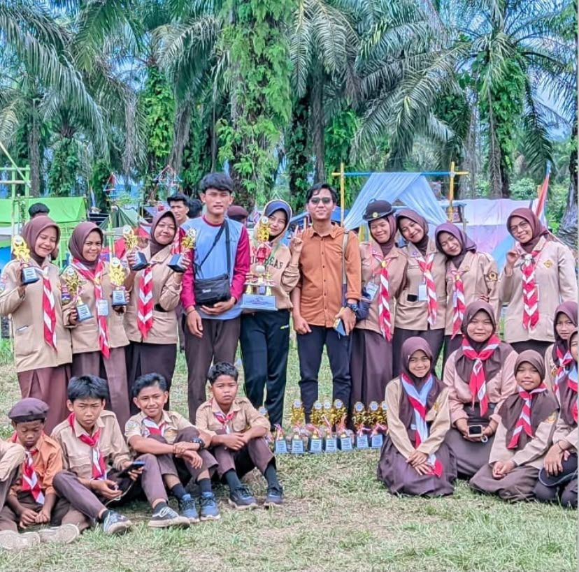
Gugus Depan 02.591–02.592 berpangkalan di MTs Al-Ihsaniyah, rutin berkegiatan setiap Sabtu.
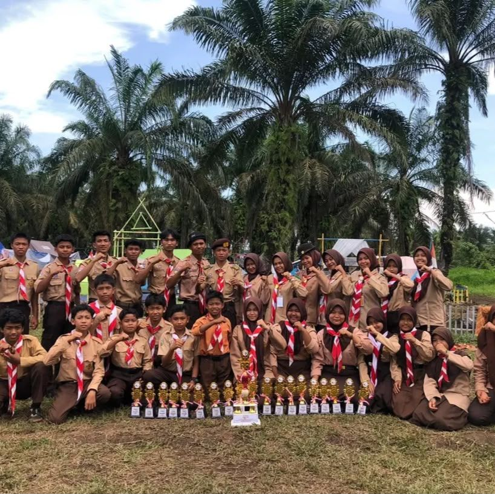
Fotografi, Drum Band, Bahasa Asing, Kultum, dan Tahfiz — serta OSIM untuk melatih kepemimpinan.
04 Madrasah dalam angka
05 Guru & Tenaga Pendidik
Guru-guru MTs Al-Ihsaniyah mengampu mata pelajaran umum dan keagamaan, sekaligus membina murid di luar kelas.
06 Galeri Kegiatan
Ketuk foto untuk memperbesar.
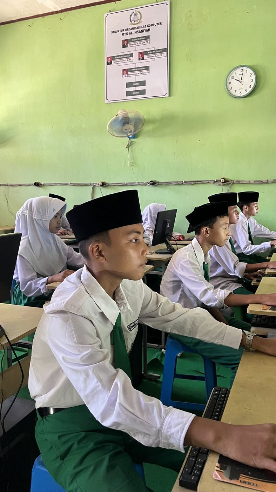
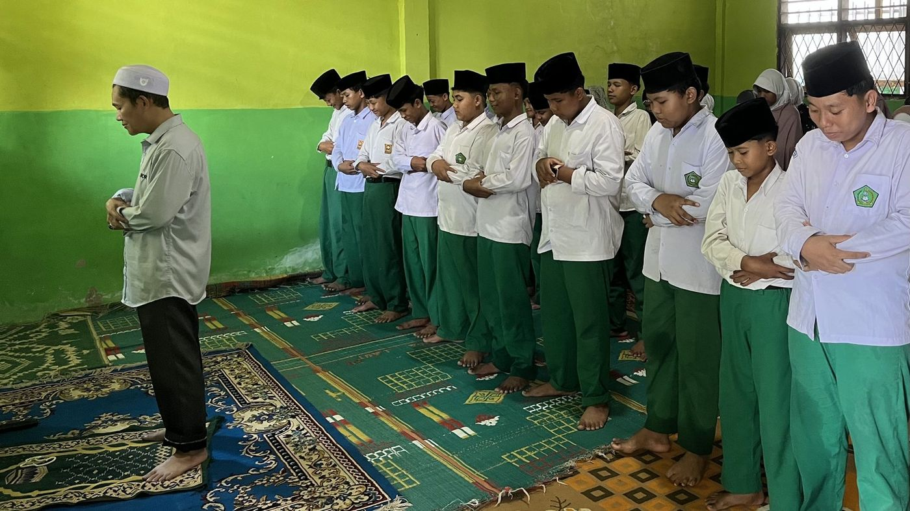
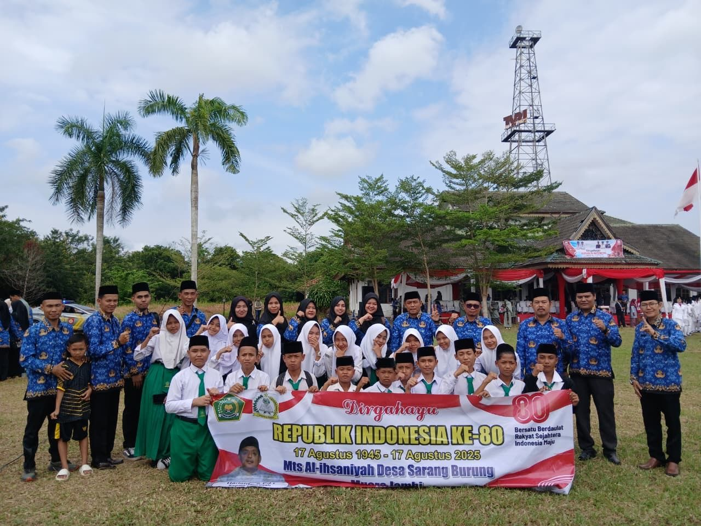
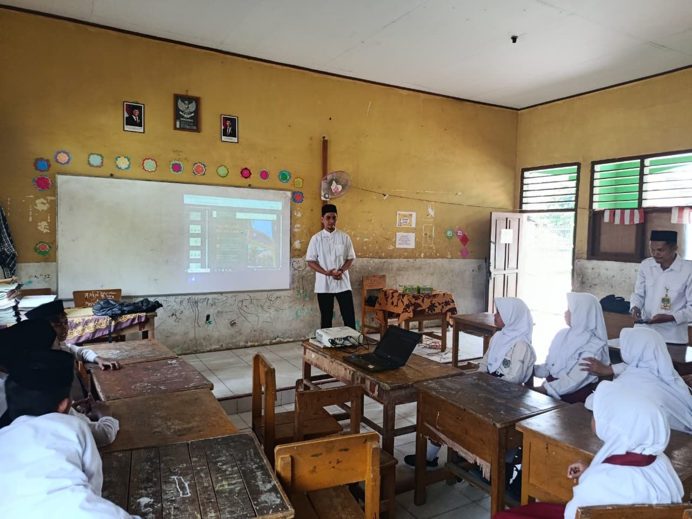
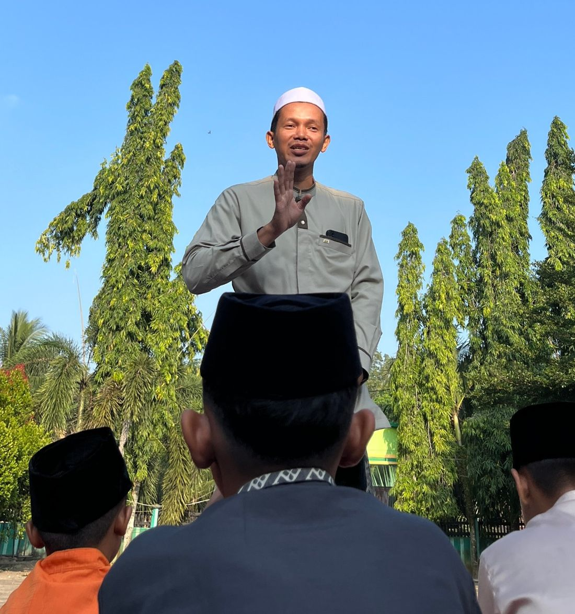
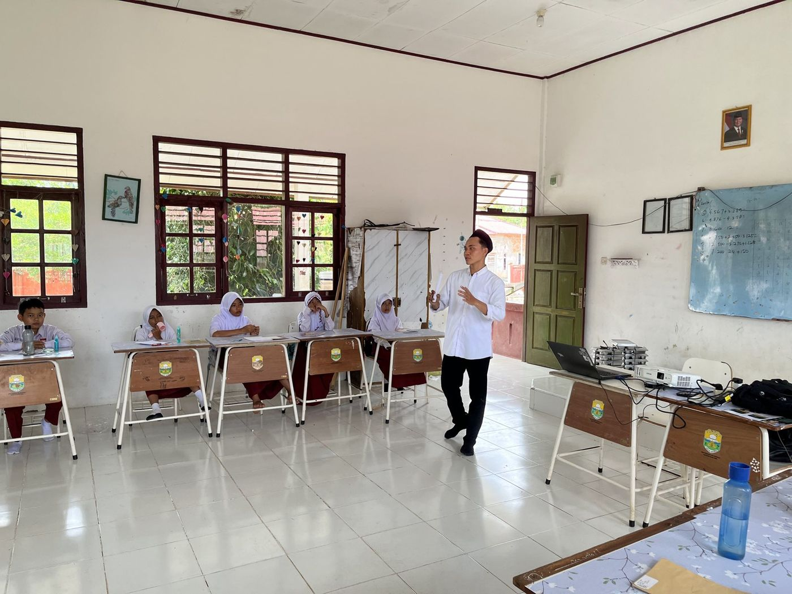
07 SPMB
MTs Al-Ihsaniyah menerima lulusan SD/MI setiap tahun. Jadwal dan formulir SPMB 2027/2028 akan diumumkan di halaman Berita.
Ikuti jadwal SPMB di halaman Berita dan media sosial madrasah.
Lengkapi formulir pendaftaran yang dibagikan panitia saat pendaftaran dibuka.
Siapkan dokumen sesuai syarat yang diumumkan panitia SPMB.
Hubungi panitia melalui WhatsApp atau datang ke kantor tata usaha.
Tahun lalu pendaftaran dibuka 15 April – 30 Juni. Jadwal 2027/2028 segera diumumkan.
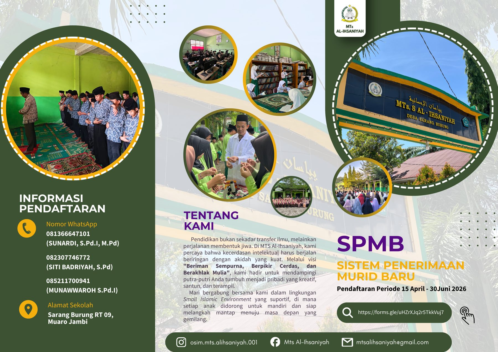
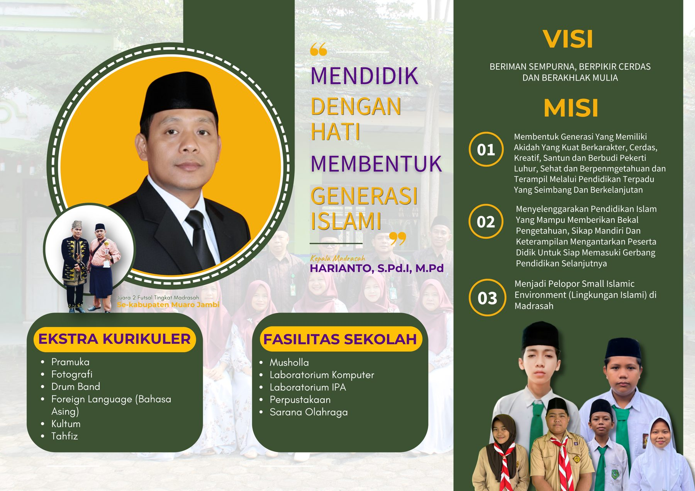
08 Agenda
09 Berita
Kunjungi kami
Jl. Haji Abdul Ghafar, RT 09/RW 02, Desa Sarang Burung, Kec. Jambi Luar Kota, Kab. Muaro Jambi. Silakan datang ke kantor tata usaha pada jam sekolah atau hubungi kami melalui WhatsApp.